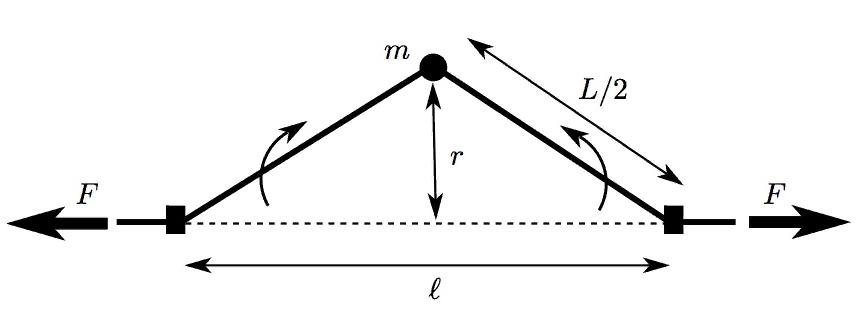

Статическая физика
Статическая физика
Статистическая физика — это раздел теоретической физики, посвящённый изучению систем с произвольным (часто — бесконечным или несчётным) числом степеней свободы. Изучаемые системы могут быть как классическими, так и квантовыми.
Статистическая физика фактически делится на статистическую механику и статистическую теорию поля.
В свою очередь статистическую механику обычно делят на равновесную и неравновесную.
Статистическая физика даёт вывод термодинамики многих реальных систем: идеальных газов, реальных газов, квантовых газов, простых конденсированных сред (например, идеальных кристаллов, спиновых цепочек).
В частности, она даёт явные соотношения для используемых в термодинамике энтропии, термодинамической работы, внутренней энергии и объясняет закон неубывания энтропии.
Такие напряжённые исследования не могли не дать соответствующих результатов. Статистическая физика позволила объяснить и количественно описать сверхпроводимость, сверхтекучесть, турбулентность, коллективные явления в твёрдых телах и плазме, структурные особенности жидкостей. Она лежит в основе современной астрофизики. Именно статистическая физика позволила создать такую интенсивно развиваемую науку как физика жидких кристаллов и построить теорию фазовых переходов и критических явлений.

Математические методы, которые применяются в статистической физике, очень разнообразны. Это методы квантовой механики и квантовой теории поля, теория нелинейных уравнений, теория стохастических дифференциальных уравнений, а также различные методы математической физики. Важную роль в статистической физике играют численные методы, требующие очень мощных вычислительных машин.